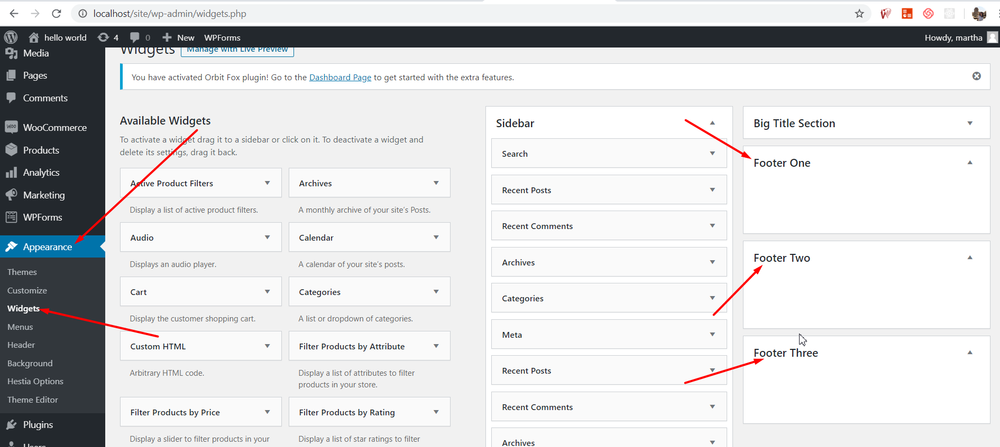
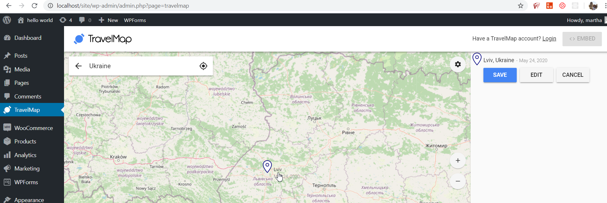
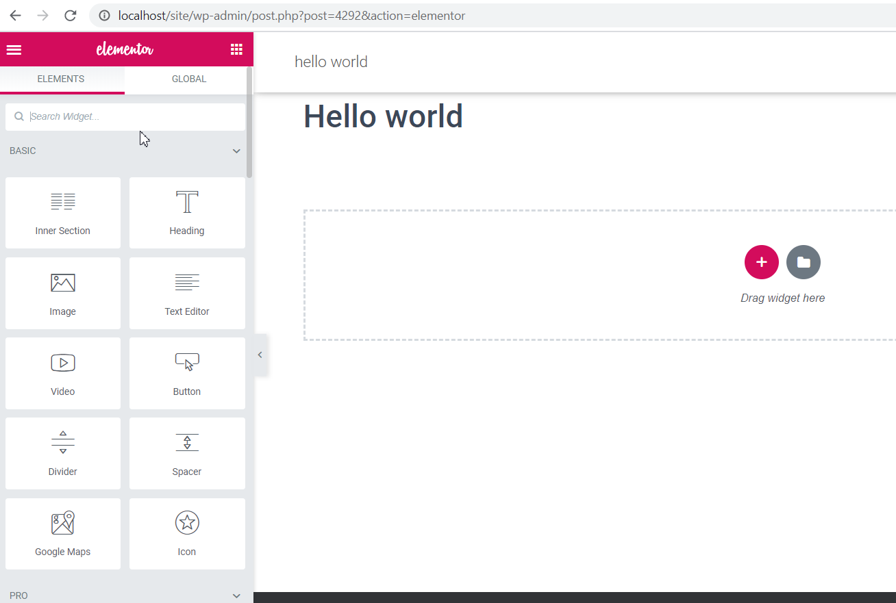
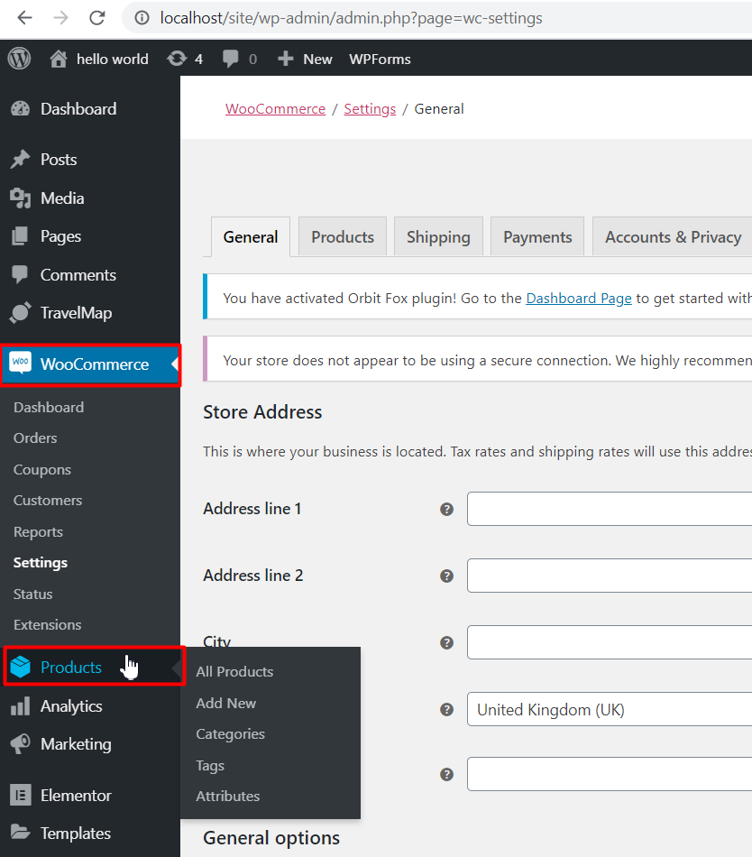

Hello! Do you want to create a modern multilingual website for your business, startup, portfolio,
freelance or e-commerce?
This article is going to show you how to do it with Wordpress "Hestia" theme.
Prerequisites:
- Download the theme on https://wordpress.org/themes/hestia/.
- Install it in Wordpress admin panel to Appearance->Themes.
Features:
- Theme is fully responsive. It looks great at all types of devices.
- The widgetized footer is available in Appearance->Widgets for adding important site links or
external links,
social links, copyright info, business info, extra searchbar…etc.

- Theme is compatible with travel map plugin that allows to create, trace and manage travel
itinerary from WordPress admin.

- Theme is compatible with Elementor plugin. Elementor is a page builder plugin that replaces
the basic WordPress editor
with a live frontend editor, so you can create complex layouts visually, and design your website
live, without having to switch
between the editor and the preview mode. You can finally customize everything on your website,
easily and directly.
Elementor is the editor for designers who want to fine-tune every last detail.

- Availability of e-commerce feature. Theme is compatible with Woocommerce that allows to have
an online store. With just a few clicks, your WordPress website turns into a fully-functional
e-commerce website.

- Theme is compatible with WPML. By default, WordPress does not come with features required to
create a proper multilingual site. That's why WPML is the right solution to achieve this goal.
It offers an easy to use interface for managing translations. It also adds language switching
options for your users. You don’t need to do anything special to create multilingual-ready site.
Just use this theme and WPML takes care of the rest.
In order to run the theme multilingual follow the steps below:
Conclusion:
Hestia is the great choice to create SEO friendly website with design for all your needs. It is going to
blow you away with its clean look.
Here you will find a minimalistic theme with blog, portfolio and shop options.
The plugins that this theme is compatible with will allow you to integrate additional functionality easily.